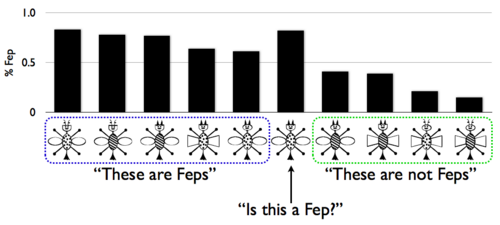

An important worry about Bayesian models of learning is that the Hypothesis space must either be too simple (e.g. a single coin weight!), specified in a rather ad-hoc way, or both. There is a tension here: human representations of the world are enormously complex and so the space of possible representations must be correspondingly big, and yet we would like to understand the representational resources in simple and uniform terms. How can we construct very large (possibly infinite) hypothesis spaces and priors over them? One possibility is to build the hypotheses themselves via stochastic recursion. That is, we build hypotheses by a combination of primitives and combination operations, randomly deciding which to use.
For instance, imagine that we want a model that generates strings, but we want the strings to be valid arithmetic expressions. Since we know that arithmetic has as primitives numbers and combines them with operations, we can define a simple generator:
var randomConstant = function() {
return uniformDraw(_.range(10))
}
var randomCombination = function(f,g) {
var op = uniformDraw(['+','-','*','/','^']);
return '('+f+op+g+')'
}
// sample an arithmetic expression
var randomArithmeticExpression = function() {
flip() ?
randomCombination(randomArithmeticExpression(), randomArithmeticExpression()) :
randomConstant()
}
randomArithmeticExpression()
Notice that randomArithmeticExpression can generate an infinite set of different strings, but that more complex strings are less likely. That is, the process we use to build strings also (implicitly) defines a prior over strings that penalizes complexity. To see this more let’s use Infer to reveal the first 100 strings:
var randomConstant = function() {
return uniformDraw(_.range(10))
}
var randomCombination = function(f,g) {
var op = uniformDraw(['+','-','*','/','^']);
return '('+f+op+g+')'
}
// sample an arithmetic expression
var randomArithmeticExpression = function() {
flip() ?
randomCombination(randomArithmeticExpression(), randomArithmeticExpression()) :
randomConstant()
}
randomArithmeticExpression()
viz.table(Infer({method: 'enumerate', maxExecutions: 100}, function() {
return randomArithmeticExpression()
}))
If we now interpret our strings as hypotheses, we have compactly defined an infinite hypothesis space and its prior.
Consider the following WebPPL program, which induces an arithmetic function from examples. It is much as above, except that we include a variable among the primitives (to make it a function). We also construct a nested array, instead of a simple string, and include a function runify that converts the array into a javascript function.
(The helper function prettify, above the fold, makes the nested array pretty to look at.)
///fold:
// make expressions easier to look at
var prettify = function(e) {
if (e == 'x' || _.isNumber(e)) {
return e
} else {
var op = e[0]
var arg1 = prettify(e[1])
var prettyarg1 = (!_.isArray(e[1]) ? arg1 : '(' + arg1 + ')')
var arg2 = prettify(e[2])
var prettyarg2 = (!_.isArray(e[2]) ? arg2 : '(' + arg2 + ')')
return prettyarg1 + ' ' + op + ' ' + prettyarg2
}
}
///
// make expressions runnable
var runify = function(e) {
//helper functions:
var plus = function(a,b) {return a + b}
var multiply = function(a,b) {return Math.round(a * b,0)}
var divide = function(a,b) {return Math.round(a/b,0)}
var minus = function(a,b) {return a - b}
var power = function(a,b) {return Math.pow(a,b)}
var identity = function(a) {return a}
if (e == 'x') {
return identity
} else if (_.isNumber(e)) {
return function(z) { return e }
} else {
var op = (e[0] == '+') ? plus :
(e[0] == '-') ? minus :
(e[0] == '*') ? multiply :
(e[0] == '/') ? divide :
power
var arg1Fn = runify(e[1])
var arg2Fn = runify(e[2])
return function(z) {
return op(arg1Fn(z),arg2Fn(z))
}
}
}
var randomConstantFunction = function() {
return uniformDraw(_.range(10))
}
var randomCombination = function(f,g) {
var op = uniformDraw(['+','-','*','/','^']);
return [op, f, g];
}
// sample an arithmetic expression
var randomArithmeticExpression = function() {
if (flip()) {
return randomCombination(randomArithmeticExpression(), randomArithmeticExpression())
} else {
if (flip()) {
return 'x'
} else {
return randomConstantFunction()
}
}
}
viz.table(Infer({method: 'enumerate', maxExecutions: 1000}, function() {
var e = randomArithmeticExpression();
var s = prettify(e);
var f = runify(e);
condition(f(1) == 3);
return {s: s};
}))
This model can learn any function consisting of the integers 0 to 9 and the operations add, subtract, multiply, divide, and raise to a power.
The condition in this case asks for an arithmetic expression on variable x such that it evaluates to 3 when x is 1. There are many extensionally equivalent ways to satisfy the condition, for instance the expressions 3, 1 + 2, and x + 2, but because the more complex expressions require more choices to generate, they are chosen less often.
Notice that the model puts the most probability on a function that always returns 3 (). This is the simplest hypothesis consistent with the data. Let’s see what happens if we have more data – try changing the condition in the above query to condition(f(1) == 3 && f(2) == 4), then to condition(f(1) == 3 && f(2) == 6).
This model learns from an infinite hypothesis space—all expressions made from ‘x’, ‘+’, ‘-‘, and constant integers—but specifies both the hypothesis space and its prior using the simple generative process randomArithmeticExpression.
How can we account for the productivity of human concepts (the fact that every child learns a remarkable number of different, complex concepts)? The “classical” theory of concepts formation accounted for this productivity by hypothesizing that concepts are represented compositionally, by logical combination of the features of objects (see for example Bruner, Goodnow, and Austin, 1951). That is, concepts could be thought of as rules for classifying objects (in or out of the concept) and concept learning was a process of deducing the correct rule.
While this theory was appealing for many reasons, it failed to account for a variety of categorization experiments. Here are the training examples, and one transfer example, from the classic experiment of Medin and Schaffer (1978). The bar graph above the stimuli shows the portion of human participants who said that bug was a “fep” in the test phase (the data comes from a replication by Nosofsky, Gluck, Palmeri, McKinley (1994); the bug stimuli are courtesy of Pat Shafto):

Notice three effects: there is a gradient of generalization (rather than all-or-nothing classification), some of the Feps are better (or more typical) than others (this is called “typicality”), and the transfer item is a ‘‘better’’ Fep than any of the Fep exemplars (this is called “prototype enhancement”). Effects like these were difficult to capture with classical rule-based models of category learning, which led to deterministic behavior. As a result of such difficulties, psychological models of category learning turned to more uncertain, prototype and exemplar based theories of concept representation. These models were able to predict behavioral data very well, but lacked compositional conceptual structure.
Is it possible to get graded effects from rule-based concepts? Perhaps these effects are driven by uncertainty in learning rather than uncertainty in the representations themselves? To explore these questions Goodman, Tenenbaum, Feldman, and Griffiths (2008) introduced the Rational Rules model, which learns deterministic rules by probabilistic inference. This model has an infinite hypothesis space of rules (represented in propositional logic), which are generated compositionally. Here is a slightly simplified version of the model, applied to the above experiment:
// first set up the training and test data:
var numFeatures = 4;
var makeObj = function(l) {return _.zipObject(['trait1', 'trait2', 'trait3', 'trait4', 'fep'], l)}
var feps = map(makeObj, [[0,0,0,1, 1], [0,1,0,1, 1], [0,1,0,0, 1], [0,0,1,0, 1], [1,0,0,0, 1]])
var nonFeps = map(makeObj, [[0,0,1,1, 0], [1,0,0,1, 0], [1,1,1,0, 0], [1,1,1,1, 0]])
var others = map(makeObj, [[0,1,1,0], [0,1,1,1], [0,0,0,0], [1,1,0,1], [1,0,1,0], [1,1,0,0], [1,0,1,1]])
var data = feps.concat(nonFeps)
var allObjs = others.concat(feps).concat(nonFeps)
//here are the human results from Nosofsky et al, for comparison:
var humanFeps = [.77, .78, .83, .64, .61]
var humanNonFeps = [.39, .41, .21, .15]
var humanOther = [.56, .41, .82, .40, .32, .53, .20]
var humanData = humanOther.concat(humanFeps).concat(humanNonFeps)
// two parameters: stopping probability of the grammar, and noise probability:
var tau = 0.3;
var noiseParam = Math.exp(-1.5)
// a generative process for disjunctive normal form propositional equations:
var samplePred = function() {
var trait = uniformDraw(['trait1', 'trait2', 'trait3', 'trait4'])
var value = flip()
return function(x) {return x[trait] == value}
}
var sampleConj = function() {
if(flip(tau)) {
var c = sampleConj()
var p = samplePred()
return function(x) {return c(x) && p(x)}
} else {
return samplePred()
}
}
var getFormula = function() {
if(flip(tau)) {
var c = sampleConj()
var f = getFormula()
return function(x) {return c(x) || f(x)};
} else {
return sampleConj()
}
}
var rulePosterior = Infer({method: 'enumerate', maxExecutions: 1000}, function() {
// sample a classification formula
var rule = getFormula()
// condition on correctly (up to noise) accounting for observations
var obsFn = function(datum){observe(Bernoulli({p: rule(datum) ? (1-noiseParam) : noiseParam}), datum.fep == 1)}
mapData({data: data}, obsFn)
// return posterior predictive
return map(rule, allObjs)
})
//build predictive distribution for each item
var predictives = map(function(i){expectation(rulePosterior,function(x){x[i]})}, _.range(15))
viz.scatter(predictives, humanData)
In addition to achieving a good overall correlation with the data, this model captures the three qualitative effects described above: graded generalization, typicality, and prototype enhancement. Make sure you see how to read each of these effects from the above plot! Goodman, et al, have used to this model to capture a variety of other classic categorization effects [@Goodman2008b], as well. Thus probabilistic induction of (deterministic) rules can capture many of the graded effects previously taken as evidence against rule-based models.
What is the general principle in the two above examples? We can think of it as the following recipe: we build hypotheses by stochastically choosing between primitives and combination operations, this specifies an infinite “language of thought”; each expression in this language in turn specifies the likelihood of observations. Formally, the stochastic combination process specifies a probabilistic grammar; which yields terms compositionally interpreted into a likelihood over data. A small grammar can generate an infinite array of potential hypotheses; because grammars are themselves generative processes, a prior is provided for free from this formulation.
This style of compositional concept induction model, can be naturally extended to complex hypothesis spaces, each defined by a grammar. For instance to model theory acquisition, learning natural numbers concepts, and many others. See:
Compositionality in rational analysis: Grammar-based induction for concept learning. N. D. Goodman, J. B. Tenenbaum, T. L. Griffiths, and J. Feldman (2008). In M. Oaksford and N. Chater (Eds.). The probabilistic mind: Prospects for Bayesian cognitive science.
A Bayesian Model of the Acquisition of Compositional Semantics. S. T. Piantadosi, N. D. Goodman, B. A. Ellis, and J. B. Tenenbaum (2008). Proceedings of the Thirtieth Annual Conference of the Cognitive Science Society.
Piantadosi, S. T., & Jacobs, R. A. (2016). Four Problems Solved by the Probabilistic Language of Thought. Current Directions in Psychological Science, 25(1).
There is also no reason that the concepts need to be deterministic; in WebPPL stochastic functions can be constructed compositionally and learned by induction:
Reading & Discussion: Readings
Test your knowledge: Exercises
Next chapter: 11. Hierarchical models